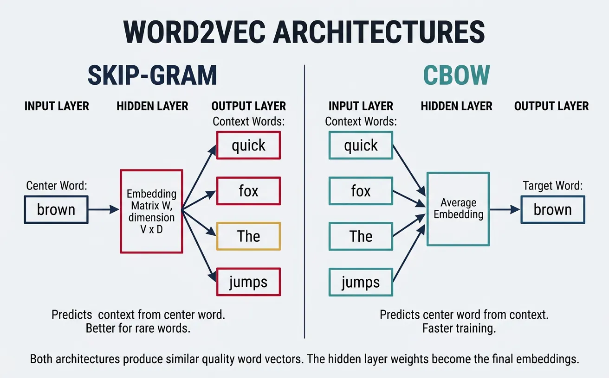
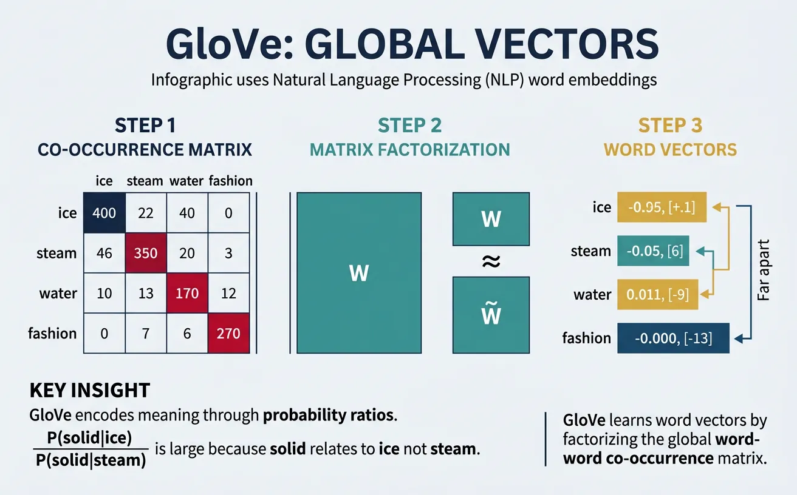
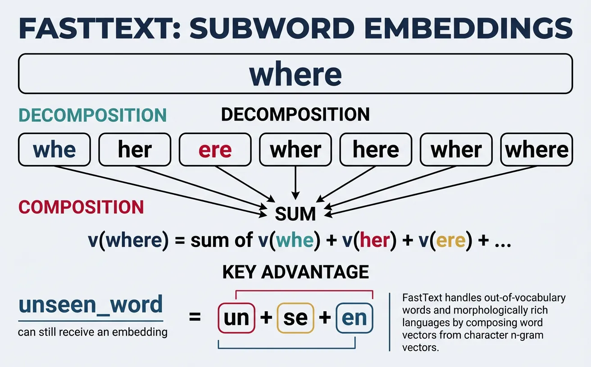
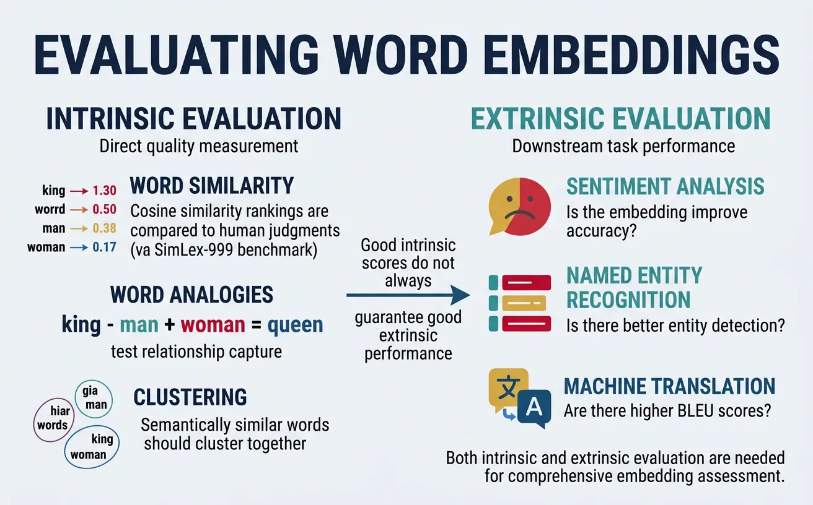
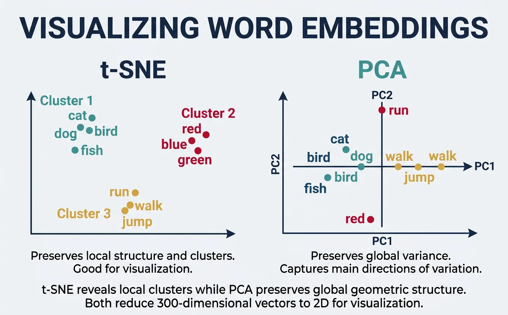
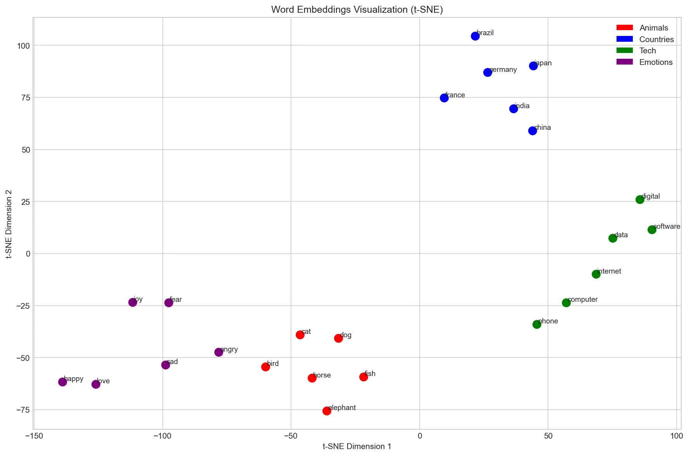
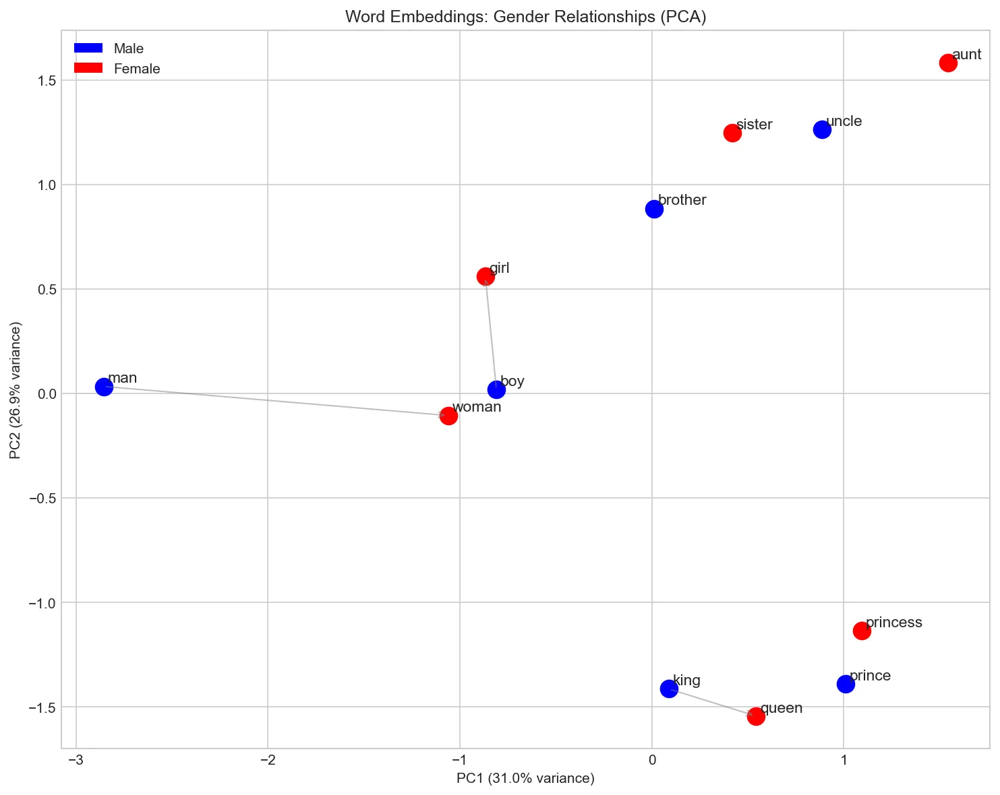

Introduction to Word Embeddings
Word embeddings revolutionized NLP by representing words as dense vectors that capture semantic meaning. In this fourth part, we explore the techniques that made this possible.
Why Do We Need Word Embeddings?
Computers understand numbers, not words. Before we can apply any machine learning algorithm to text—whether classifying emails as spam, translating between languages, or generating responses in a chatbot—we must convert words into numerical representations that a model can process. The question is: how do we represent words as numbers in a way that preserves their meaning?
The simplest approach is one-hot encoding: assign each word in your vocabulary a unique integer index, then represent it as a binary vector with a single "1" at that index and "0" everywhere else. If your vocabulary has 50,000 words, every word becomes a 50,000-dimensional vector—enormously wasteful, since 49,999 dimensions contain no information. Worse, every pair of one-hot vectors is equally distant from every other pair. The cosine similarity between "cat" and "dog" is zero—exactly the same as between "cat" and "democracy." One-hot encoding captures nothing about what words actually mean.
Word embeddings solve this problem by learning dense, low-dimensional vectors (typically 100–300 dimensions) where the position of each word in the vector space reflects its meaning. Words with similar meanings—like "happy" and "joyful"—end up close together, while unrelated words—like "happy" and "refrigerator"—are far apart. These vectors are not hand-designed; they are learned automatically from large text corpora by observing patterns in how words are used together.
Key Insight
Word embeddings capture the distributional hypothesis: words that appear in similar contexts tend to have similar meanings. By encoding words as dense vectors in a continuous space, embeddings enable mathematical operations on meaning itself—measuring similarity, finding analogies, and clustering related concepts.
Think of embeddings as coordinates on a semantic map. Just as cities that are geographically close share similar climates, words that are close in embedding space share similar meanings. The embedding dimensions don't correspond to human-interpretable features (like "is an animal" or "is abstract"), but they collectively encode rich semantic and syntactic information. A well-trained embedding space might place all animals in one region, all countries in another, and all emotions in a third—with finer-grained structure within each cluster.
Prerequisites & Cross-References
Word embeddings build on several foundational concepts. If any of these are unfamiliar, we recommend reviewing the linked guides before continuing:
- Vectors & matrix operations — dot products, cosine similarity, matrix multiplication. See our NumPy Foundations guide for hands-on practice with arrays and linear algebra operations.
- Neural network basics — how neurons, weights, layers, and backpropagation work. Word2Vec is a shallow neural network. See our Artificial Neural Networks Guide for a complete walkthrough.
- Gradient descent & loss functions — the optimization process that trains embeddings. Covered in detail in our ML Mathematics & Statistics Foundations article.
- Text representation basics — Bag-of-Words and TF-IDF. Covered in Part 3 of this NLP series, which provides the context for why embeddings are a major advance.
NLP Mastery
NLP Fundamentals & Linguistic Basics
Phonology, morphology, syntax, semantics, pragmaticsTokenization & Text Cleaning
Subword tokenization, BPE, stopwords, normalizationText Representation & Feature Engineering
Bag-of-words, TF-IDF, feature extraction, vectorizationWord Embeddings
Word2Vec, GloVe, FastText, embedding spaces, analogiesStatistical Language Models & N-grams
Probability chains, smoothing, perplexity, Markov modelsNeural Networks for NLP
Feedforward nets, backpropagation, activation functionsRNNs, LSTMs & GRUs
Sequence modeling, vanishing gradients, gated architecturesTransformers & Attention Mechanism
Self-attention, multi-head attention, positional encodingPretrained Language Models & Transfer Learning
BERT, RoBERTa, fine-tuning, feature extractionGPT Models & Text Generation
Autoregressive generation, prompting, GPT architectureCore NLP Tasks
NER, POS tagging, sentiment analysis, text classificationAdvanced NLP Tasks
Question answering, summarization, machine translationMultilingual & Cross-lingual NLP
mBERT, XLM-R, zero-shot transfer, language diversityEvaluation, Ethics & Responsible NLP
BLEU, ROUGE, bias detection, fairness, responsible AINLP Systems, Optimization & Production
Model serving, quantization, distillation, deploymentCutting-Edge & Research Topics
LLMs, multimodal NLP, reasoning, emerging researchThe Distributional Hypothesis
The foundation of word embeddings rests on a powerful linguistic principle: "You shall know a word by the company it keeps" (J.R. Firth, 1957). This distributional hypothesis suggests that words appearing in similar contexts tend to have similar meanings. For example, "dog" and "cat" frequently appear near words like "pet," "feed," "cute," and "furry," indicating semantic similarity.
Consider the sentences: "I took my dog to the vet" and "I took my cat to the vet." Both "dog" and "cat" appear in identical contexts—preceded by "my" and followed by "to the vet." Across millions of sentences, "dog" and "cat" share an enormous number of contextual neighbours: "pet," "feed," "furry," "collar," "vet," "adopted." By contrast, "dog" and "democracy" almost never share context words. A model that learns to predict context words from a center word (or vice versa) will naturally assign similar vectors to "dog" and "cat," because they are interchangeable in so many contexts.
This principle extends beyond simple synonyms. Words that are semantically related (but not synonymous) also share contexts: "doctor" and "nurse" co-occur with "hospital," "patient," and "treatment." Even syntactic roles are captured: all adjectives share contexts with nouns, so adjectives cluster together in embedding space. The distributional hypothesis is the engine that powers every embedding method we'll study—Word2Vec, GloVe, and FastText all exploit it in different ways.
Geometric Intuition: Words as Points in Space
Once words are embedded as vectors, we can use geometry to reason about meaning. The distance between two points tells us how semantically different two words are. The direction from one point to another encodes a specific relationship. For instance, the vector from "king" to "queen" points in roughly the same direction as the vector from "man" to "woman"—both encode the concept of gender. This is why the famous analogy king − man + woman ≈ queen works: it's vector arithmetic in meaning space.
We measure closeness using cosine similarity, which computes the angle between two vectors rather than their absolute distance. Two vectors pointing in the same direction have cosine similarity close to 1.0 (very similar), perpendicular vectors have similarity 0.0 (unrelated), and opposing vectors have similarity −1.0. Cosine similarity is preferred over Euclidean distance because it's invariant to vector magnitude—it measures what a word means regardless of how strongly that meaning is expressed. For a deeper dive into these vector operations, see our NumPy Foundations tutorial where we implement dot products and norms from scratch.
From Sparse to Dense Representations
One-hot encoding (sparse): vocabulary of 50,000 words ? 50,000-dimensional vectors with exactly one "1"
Word embeddings (dense): vocabulary of 50,000 words ? 100-300 dimensional vectors with continuous values
Dense representations capture semantic relationships and enable generalization to unseen word combinations.
# Comparing sparse vs dense representations
import numpy as np
# Sparse one-hot encoding (vocabulary: cat, dog, bird, fish)
vocab = {'cat': 0, 'dog': 1, 'bird': 2, 'fish': 3}
vocab_size = len(vocab)
# One-hot vectors - every word equally distant
cat_onehot = np.array([1, 0, 0, 0])
dog_onehot = np.array([0, 1, 0, 0])
bird_onehot = np.array([0, 0, 1, 0])
# Cosine similarity between one-hot vectors
def cosine_similarity(a, b):
return np.dot(a, b) / (np.linalg.norm(a) * np.linalg.norm(b))
print("One-hot similarities:")
print(f"cat-dog: {cosine_similarity(cat_onehot, dog_onehot):.4f}") # 0.0
print(f"cat-bird: {cosine_similarity(cat_onehot, bird_onehot):.4f}") # 0.0
# Dense embeddings (hypothetical learned vectors)
cat_embed = np.array([0.8, 0.5, -0.2, 0.9]) # furry pet
dog_embed = np.array([0.7, 0.6, -0.3, 0.85]) # furry pet (similar to cat)
bird_embed = np.array([0.1, -0.5, 0.9, 0.3]) # flies, has feathers
print("\nDense embedding similarities:")
print(f"cat-dog: {cosine_similarity(cat_embed, dog_embed):.4f}") # ~0.98 (similar!)
print(f"cat-bird: {cosine_similarity(cat_embed, bird_embed):.4f}") # ~0.15 (different)Word2Vec
Word2Vec, introduced by Mikolov et al. at Google in 2013, revolutionized NLP by efficiently learning high-quality word vectors from large text corpora. The key innovation was using shallow neural networks trained on a self-supervised task: predicting words from their context (or vice versa). This seemingly simple objective forces the model to learn meaningful semantic and syntactic relationships.
Word2Vec provides two architectures: Skip-gram predicts context words given a center word, while CBOW (Continuous Bag of Words) predicts a center word given its context. Both produce similar quality embeddings, but Skip-gram tends to perform better on smaller datasets and rare words, while CBOW is faster to train on larger corpora.
How Word2Vec Actually Learns
Word2Vec is a shallow neural network with one hidden layer. The input is a one-hot encoded word (a vector with a single "1"), the hidden layer is the embedding matrix (V × D), and the output predicts which words are likely to appear nearby. Through backpropagation and gradient descent—the same optimization process used in all neural networks—the embedding weights are iteratively adjusted so that words appearing in similar contexts receive similar vectors.
If you're unfamiliar with how neural networks learn through forward propagation and backpropagation, we cover these concepts step by step in our ANN guide: Forward Propagation and Gradient Descent sections. Understanding these mechanisms will help you appreciate why Word2Vec produces such effective embeddings despite its architectural simplicity.

Skip-gram Model
The Skip-gram model takes a center word as input and predicts the surrounding context words within a fixed window. For the sentence "The quick brown fox jumps" with window size 2, if "brown" is the center word, Skip-gram learns to predict ["quick", "fox"] (and potentially "The", "jumps" depending on implementation). This objective teaches the model that words appearing in similar contexts should have similar vectors.
The architecture is elegantly simple: an input layer (one-hot encoded word), a hidden layer (the embedding), and an output layer (softmax over vocabulary). The hidden layer weights become the final word vectors. Despite its simplicity, Skip-gram captures sophisticated relationships—famously enabling vector arithmetic like king - man + woman ˜ queen.
Here's the intuition for why this works: suppose the model sees "cat" surrounded by "pet," "fluffy," and "purrs," and also sees "dog" surrounded by "pet," "fluffy," and "barks." To predict the shared context words equally well for both "cat" and "dog," the model learns to assign them similar embedding vectors. Words that never share contexts—like "cat" and "algebra"—develop very different vectors. Over billions of training examples, the embedding space naturally organises itself so that proximity reflects semantic similarity. The hidden layer of this simple prediction task encodes a rich, continuous map of meaning.
Skip-gram Architecture
Input: One-hot vector of center word (V dimensions)
Hidden: Embedding layer W (V × D) where D is embedding dimension
Output: Softmax probability over all vocabulary words
Objective: Maximize probability of context words given center word
# Skip-gram conceptual implementation
import numpy as np
from collections import defaultdict
def create_skipgram_data(sentences, window_size=2):
"""
Generate (center_word, context_word) pairs for Skip-gram training.
"""
pairs = []
for sentence in sentences:
words = sentence.lower().split()
for i, center_word in enumerate(words):
# Get context words within window
start = max(0, i - window_size)
end = min(len(words), i + window_size + 1)
for j in range(start, end):
if i != j: # Skip the center word itself
context_word = words[j]
pairs.append((center_word, context_word))
return pairs
# Example corpus
sentences = [
"the cat sat on the mat",
"the dog sat on the rug",
"the cat chased the dog"
]
# Generate training pairs
skipgram_pairs = create_skipgram_data(sentences, window_size=2)
print("Skip-gram training pairs (center ? context):")
for center, context in skipgram_pairs[:10]:
print(f" {center} ? {context}")
# Count co-occurrences
cooccurrence = defaultdict(lambda: defaultdict(int))
for center, context in skipgram_pairs:
cooccurrence[center][context] += 1
print(f"\nContext words for 'cat': {dict(cooccurrence['cat'])}")
print(f"Context words for 'dog': {dict(cooccurrence['dog'])}")CBOW Model
CBOW (Continuous Bag of Words) inverts the Skip-gram objective: given context words, predict the center word. The context words are averaged (or summed) into a single vector, which is then used to predict the missing center word. For "The quick ___ fox jumps," CBOW takes ["The", "quick", "fox", "jumps"] as input and learns to predict "brown."
CBOW trains faster than Skip-gram because it treats the entire context as a single training example rather than multiple (center, context) pairs. It also provides slight improvements for frequent words since their vectors are updated more often through multiple context combinations. However, Skip-gram generally produces better representations for rare words.
# CBOW conceptual implementation
import numpy as np
def create_cbow_data(sentences, window_size=2):
"""
Generate (context_words, center_word) pairs for CBOW training.
Context is a list of surrounding words.
"""
pairs = []
for sentence in sentences:
words = sentence.lower().split()
for i, center_word in enumerate(words):
# Collect context words within window
context = []
start = max(0, i - window_size)
end = min(len(words), i + window_size + 1)
for j in range(start, end):
if i != j:
context.append(words[j])
if context: # Only add if we have context words
pairs.append((context, center_word))
return pairs
# Example corpus
sentences = [
"the cat sat on the mat",
"the dog sat on the rug",
"the cat chased the dog"
]
# Generate CBOW training data
cbow_pairs = create_cbow_data(sentences, window_size=2)
print("CBOW training pairs (context ? center):")
for context, center in cbow_pairs[:8]:
print(f" {context} ? {center}")
# In CBOW, context vectors are averaged
def average_context_vectors(context_words, word_vectors, embedding_dim=50):
"""Average context word vectors (simulating CBOW input)."""
vectors = []
for word in context_words:
if word in word_vectors:
vectors.append(word_vectors[word])
if vectors:
return np.mean(vectors, axis=0)
return np.zeros(embedding_dim)
# Simulated word vectors
np.random.seed(42)
word_vectors = {word: np.random.randn(50) for word in ['the', 'cat', 'sat', 'on', 'mat']}
context = ['the', 'cat', 'on', 'the']
avg_vector = average_context_vectors(context, word_vectors)
print(f"\nAveraged context vector shape: {avg_vector.shape}")
print(f"First 5 dimensions: {avg_vector[:5]}")Negative Sampling
Computing the full softmax over a vocabulary of 100,000+ words for every training example is computationally prohibitive. Negative sampling solves this by transforming the multi-class classification into multiple binary classifications. Instead of predicting the exact context word, the model learns to distinguish real (center, context) pairs from fake pairs where the context word is randomly sampled.
For each positive example (real word pair), we sample k negative examples (typically 5-20) where context words are drawn from a noise distribution—usually the unigram frequency raised to the 3/4 power. This sub-sampling reduces the dominance of frequent words like "the" and "a" while ensuring rare words are adequately represented. Negative sampling makes Word2Vec training feasible on billions of words.
Negative Sampling Objective
Goal: Maximize probability of real pairs, minimize probability of fake pairs
Positive sample: ("brown", "fox") from actual text ? should have high similarity
Negative samples: ("brown", "democracy"), ("brown", "quantum") ? randomly paired, should have low similarity
Loss: Binary cross-entropy on each positive/negative pair
# Negative sampling implementation
import numpy as np
from collections import Counter
def build_sampling_distribution(word_counts, power=0.75):
"""
Build negative sampling distribution.
Raise word frequencies to 3/4 power to reduce dominance of common words.
"""
# Calculate adjusted frequencies
adjusted_counts = {word: count**power for word, count in word_counts.items()}
total = sum(adjusted_counts.values())
# Normalize to probabilities
distribution = {word: count/total for word, count in adjusted_counts.items()}
return distribution
def sample_negatives(positive_word, vocab, sampling_dist, k=5):
"""Sample k negative examples, avoiding the positive word."""
words = list(sampling_dist.keys())
probs = list(sampling_dist.values())
negatives = []
while len(negatives) < k:
sampled = np.random.choice(words, p=probs)
if sampled != positive_word:
negatives.append(sampled)
return negatives
# Example vocabulary with frequencies
word_counts = {
'the': 1000, 'a': 800, 'cat': 50, 'dog': 45,
'quantum': 5, 'democracy': 8, 'sat': 30, 'jumped': 25
}
# Build sampling distribution
sampling_dist = build_sampling_distribution(word_counts)
print("Sampling probabilities (raised to 0.75 power):")
for word, prob in sorted(sampling_dist.items(), key=lambda x: -x[1])[:5]:
print(f" {word}: {prob:.4f} (original freq: {word_counts[word]})")
# Sample negatives for a training pair
center_word = 'cat'
positive_context = 'sat'
np.random.seed(42)
negatives = sample_negatives(positive_context, list(word_counts.keys()), sampling_dist, k=5)
print(f"\nPositive pair: ({center_word}, {positive_context})")
print(f"Negative samples: {negatives}")
# Training objective: maximize similarity for positive, minimize for negatives
def sigmoid(x):
return 1 / (1 + np.exp(-x))
# Simulated vectors
center_vec = np.random.randn(100)
positive_vec = np.random.randn(100)
negative_vecs = [np.random.randn(100) for _ in negatives]
# Compute similarities
pos_sim = np.dot(center_vec, positive_vec)
neg_sims = [np.dot(center_vec, neg_vec) for neg_vec in negative_vecs]
print(f"\nPositive similarity (should be high): {sigmoid(pos_sim):.4f}")
print(f"Negative similarities (should be low): {[f'{sigmoid(s):.4f}' for s in neg_sims]}")GloVe (Global Vectors)
GloVe (Global Vectors for Word Representation), developed at Stanford in 2014, takes a different approach from Word2Vec. Rather than learning from local context windows, GloVe directly factorizes the global word-word co-occurrence matrix. The key insight is that ratios of co-occurrence probabilities encode meaning: if P(ice|solid) / P(ice|gas) >> P(steam|solid) / P(steam|gas), this ratio reveals that "ice" and "steam" relate differently to "solid" vs "gas."
GloVe combines the benefits of count-based methods (LSA) and predictive methods (Word2Vec). It efficiently uses global statistics while learning through a weighted least-squares objective that down-weights very frequent co-occurrences. The resulting embeddings capture both semantic and syntactic regularities, often performing slightly better than Word2Vec on analogy tasks.
The mathematical foundation of GloVe relies heavily on matrix operations—constructing co-occurrence matrices, computing probability ratios, and optimising through weighted least-squares regression. If you'd like to strengthen your understanding of matrix construction and manipulation in Python, our NumPy Foundations guide covers array creation, element-wise operations, and matrix arithmetic in detail. The concept of matrix factorisation—decomposing a large matrix into smaller, more informative matrices—is also central to PCA and other dimensionality reduction techniques covered in our ML Mathematics guide.

GloVe's Key Innovation
The meaning of words is encoded in the ratios of co-occurrence probabilities, not the probabilities themselves.
Example: P(solid|ice) / P(solid|steam) is large ? ice relates to solid
P(gas|ice) / P(gas|steam) is small ? steam relates to gas
These ratios are what GloVe learns to model with word vectors.
# GloVe co-occurrence matrix construction
import numpy as np
from collections import defaultdict
def build_cooccurrence_matrix(sentences, window_size=2, vocab=None):
"""
Build word-word co-occurrence matrix.
Uses distance-weighted counting (closer words count more).
"""
if vocab is None:
# Build vocabulary from corpus
vocab = set()
for sentence in sentences:
vocab.update(sentence.lower().split())
vocab = sorted(vocab)
word2idx = {word: i for i, word in enumerate(vocab)}
vocab_size = len(vocab)
# Initialize co-occurrence matrix
cooccurrence = np.zeros((vocab_size, vocab_size))
for sentence in sentences:
words = sentence.lower().split()
for i, center_word in enumerate(words):
if center_word not in word2idx:
continue
center_idx = word2idx[center_word]
# Context window
start = max(0, i - window_size)
end = min(len(words), i + window_size + 1)
for j in range(start, end):
if i != j and words[j] in word2idx:
context_idx = word2idx[words[j]]
# Weight by distance (closer = higher weight)
distance = abs(i - j)
cooccurrence[center_idx, context_idx] += 1.0 / distance
return cooccurrence, vocab, word2idx
# Example corpus
sentences = [
"ice is solid water",
"steam is gas water",
"water can be solid liquid or gas",
"ice melts into liquid water",
"liquid water boils into steam"
]
# Build co-occurrence matrix
cooccur, vocab, word2idx = build_cooccurrence_matrix(sentences, window_size=2)
print("Vocabulary:", vocab)
print("\nCo-occurrence matrix (partial):")
print(" ", " ".join([f"{w:6s}" for w in vocab[:6]]))
for i, word in enumerate(vocab[:6]):
row = cooccur[i, :6]
print(f"{word:6s}", " ".join([f"{v:6.2f}" for v in row]))
# Compute probability ratios (GloVe's key insight)
def compute_probability_ratio(word_i, word_j, context, cooccur, word2idx):
"""Compute P(context|word_i) / P(context|word_j)"""
i, j, k = word2idx[word_i], word2idx[word_j], word2idx[context]
# P(context|word) ˜ cooccurrence[word, context] / sum(cooccurrence[word, :])
p_k_given_i = cooccur[i, k] / (cooccur[i, :].sum() + 1e-10)
p_k_given_j = cooccur[j, k] / (cooccur[j, :].sum() + 1e-10)
return p_k_given_i / (p_k_given_j + 1e-10)
# Compare ice vs steam in context of solid vs gas
if 'ice' in word2idx and 'steam' in word2idx:
print("\nProbability ratios (ice vs steam):")
for context in ['solid', 'gas', 'liquid']:
if context in word2idx:
ratio = compute_probability_ratio('ice', 'steam', context, cooccur, word2idx)
print(f" P({context}|ice) / P({context}|steam) = {ratio:.4f}")# GloVe training objective (simplified)
import numpy as np
def glove_loss(word_vec, context_vec, word_bias, context_bias,
cooccurrence, x_max=100, alpha=0.75):
"""
GloVe loss function for a single word-context pair.
J = f(X_ij) * (w_i · w_j + b_i + b_j - log(X_ij))^2
where f(x) is a weighting function that caps at x_max.
"""
# Weighting function: reduces impact of very frequent co-occurrences
if cooccurrence < x_max:
weight = (cooccurrence / x_max) ** alpha
else:
weight = 1.0
# Predicted vs actual (log co-occurrence)
prediction = np.dot(word_vec, context_vec) + word_bias + context_bias
target = np.log(cooccurrence + 1) # +1 to avoid log(0)
loss = weight * (prediction - target) ** 2
return loss
# Initialize random vectors (in practice, these are learned)
embedding_dim = 50
vocab_size = len(vocab)
np.random.seed(42)
word_vectors = np.random.randn(vocab_size, embedding_dim) * 0.1
context_vectors = np.random.randn(vocab_size, embedding_dim) * 0.1
word_biases = np.zeros(vocab_size)
context_biases = np.zeros(vocab_size)
# Compute loss for some word pairs
print("GloVe loss for sample pairs:")
for i in range(min(5, vocab_size)):
for j in range(min(5, vocab_size)):
if cooccur[i, j] > 0:
loss = glove_loss(
word_vectors[i], context_vectors[j],
word_biases[i], context_biases[j],
cooccur[i, j]
)
print(f" ({vocab[i]}, {vocab[j]}): co-occur={cooccur[i,j]:.2f}, loss={loss:.4f}")FastText
FastText, developed by Facebook AI Research in 2016, extends Word2Vec by representing each word as a bag of character n-grams. For example, "where" with n=3 becomes: ["
Consider morphologically rich languages like German or Finnish, where compound words and inflections create enormous vocabularies. FastText can generate meaningful embeddings for never-seen words by combining their subword components. "Unhappiness" benefits from learned representations of "un", "happy", and "ness." This makes FastText particularly powerful for noisy text (typos, informal spelling) and low-resource languages.

FastText Subword Decomposition
Word: "playing"
Character n-grams (n=3): [<pl, pla, lay, ayi, yin, ing, ng>]
Final embedding: sum of all n-gram vectors + word vector (if in vocabulary)
Benefit: "playing" shares n-grams with "play", "plays", "played" ? similar embeddings!
# FastText character n-gram extraction
def extract_ngrams(word, min_n=3, max_n=6):
"""
Extract character n-grams from a word.
Adds boundary markers < and >.
"""
# Add boundary markers
word = f"<{word}>"
ngrams = set()
for n in range(min_n, max_n + 1):
for i in range(len(word) - n + 1):
ngrams.add(word[i:i+n])
return sorted(ngrams)
# Examples
words = ["playing", "played", "plays", "player", "unhappiness"]
for word in words:
ngrams = extract_ngrams(word, min_n=3, max_n=4)
print(f"{word}:")
print(f" n-grams: {ngrams[:10]}...")
print()
# Show shared n-grams between related words
word1, word2 = "playing", "played"
ngrams1 = set(extract_ngrams(word1))
ngrams2 = set(extract_ngrams(word2))
shared = ngrams1 & ngrams2
print(f"Shared n-grams between '{word1}' and '{word2}':")
print(f" {shared}")
print(f" Overlap: {len(shared)} / {len(ngrams1 | ngrams2)} = {len(shared)/len(ngrams1|ngrams2):.2%}")# FastText embedding computation (conceptual)
import numpy as np
from collections import defaultdict
class SimpleFastText:
"""Simplified FastText model for demonstration."""
def __init__(self, embedding_dim=100, min_n=3, max_n=6):
self.embedding_dim = embedding_dim
self.min_n = min_n
self.max_n = max_n
self.word_vectors = {}
self.ngram_vectors = defaultdict(lambda: np.random.randn(embedding_dim) * 0.1)
def get_ngrams(self, word):
"""Extract character n-grams with boundary markers."""
word = f"<{word}>"
ngrams = []
for n in range(self.min_n, self.max_n + 1):
for i in range(len(word) - n + 1):
ngrams.append(word[i:i+n])
return ngrams
def get_word_vector(self, word):
"""
Get word embedding by summing n-gram vectors.
Works even for out-of-vocabulary words!
"""
ngrams = self.get_ngrams(word.lower())
# Sum all n-gram vectors
vector = np.zeros(self.embedding_dim)
for ngram in ngrams:
vector += self.ngram_vectors[ngram]
# Add word vector if available (for in-vocabulary words)
if word in self.word_vectors:
vector += self.word_vectors[word]
# Normalize
norm = np.linalg.norm(vector)
if norm > 0:
vector = vector / norm
return vector
# Create model and compare embeddings
np.random.seed(42)
model = SimpleFastText(embedding_dim=50)
# Compare related words
words_to_compare = [
("playing", "played"),
("playing", "quantum"),
("happiness", "unhappiness"),
("computer", "computers")
]
print("FastText similarity (based on shared n-grams):")
for w1, w2 in words_to_compare:
v1 = model.get_word_vector(w1)
v2 = model.get_word_vector(w2)
sim = np.dot(v1, v2) # Already normalized
print(f" {w1} - {w2}: {sim:.4f}")
# OOV word handling
print("\n Out-of-vocabulary word handling:")
oov_word = "unfriendliness"
vector = model.get_word_vector(oov_word)
print(f" '{oov_word}' vector (first 10 dims): {vector[:10]}")
print(f" n-grams used: {model.get_ngrams(oov_word)[:8]}...")Using Pre-trained Embeddings
Training word embeddings from scratch requires massive corpora (billions of words) and significant compute. Fortunately, pre-trained embeddings from models trained on Wikipedia, Common Crawl, and news corpora are freely available. These vectors capture general semantic knowledge that transfers well to most NLP tasks. Using pre-trained embeddings is often the first step in building practical NLP applications.
The gensim library provides easy access to popular pre-trained models including Google's Word2Vec (trained on 100 billion words), Stanford's GloVe (trained on Wikipedia + Gigaword), and Facebook's FastText (trained on Common Crawl). You can load these models, query word vectors, compute similarities, and use them as features for downstream tasks like classification or clustering.
# Loading pre-trained embeddings with Gensim
import gensim.downloader as api
# List available pre-trained models
print("Available pre-trained models:")
print(list(api.info()['models'].keys())[:10])
# Load a smaller model for demonstration (GloVe Twitter, 25d)
# In production, use 'word2vec-google-news-300' or 'glove-wiki-gigaword-300'
print("\nLoading glove-twitter-25...")
model = api.load('glove-twitter-25') # ~100MB, quick to load
print(f"Vocabulary size: {len(model)}")
print(f"Embedding dimension: {model.vector_size}")
# Get word vectors
word = "python"
if word in model:
vector = model[word]
print(f"\nVector for '{word}':")
print(f" Shape: {vector.shape}")
print(f" First 10 values: {vector[:10]}")# Word similarity and most similar words
import gensim.downloader as api
# Load pre-trained model
model = api.load('glove-twitter-25')
# Find most similar words
word = "king"
print(f"Words most similar to '{word}':")
similar = model.most_similar(word, topn=10)
for word, score in similar:
print(f" {word}: {score:.4f}")
# Word similarity scores
pairs = [
("king", "queen"),
("king", "man"),
("cat", "dog"),
("cat", "democracy"),
("happy", "sad"),
("happy", "joyful")
]
print("\nPairwise similarities:")
for w1, w2 in pairs:
if w1 in model and w2 in model:
sim = model.similarity(w1, w2)
print(f" {w1} - {w2}: {sim:.4f}")# Word analogies: king - man + woman = queen
import gensim.downloader as api
model = api.load('glove-twitter-25')
# Analogy: A is to B as C is to ?
def analogy(model, a, b, c, topn=5):
"""
Solve analogy: a is to b as c is to ?
Returns words closest to: b - a + c
"""
try:
# positive = words to add, negative = words to subtract
result = model.most_similar(positive=[b, c], negative=[a], topn=topn)
return result
except KeyError as e:
return f"Word not in vocabulary: {e}"
# Classic analogies
analogies = [
("man", "woman", "king"), # Expected: queen
("paris", "france", "london"), # Expected: england/britain
("slow", "fast", "old"), # Expected: young/new
("good", "better", "bad"), # Expected: worse
]
print("Word Analogies:")
for a, b, c in analogies:
print(f"\n {a} : {b} :: {c} : ?")
result = analogy(model, a, b, c, topn=3)
if isinstance(result, list):
for word, score in result:
print(f" {word}: {score:.4f}")
else:
print(f" {result}")Evaluating Word Embeddings
Word embeddings are typically evaluated through intrinsic and extrinsic methods. Intrinsic evaluation directly measures embedding quality on linguistic tasks like word similarity and analogy completion. Extrinsic evaluation measures how well embeddings improve performance on downstream tasks like sentiment analysis, named entity recognition, or machine translation.
Standard intrinsic benchmarks include WordSim-353 (353 word pairs with human similarity judgments), SimLex-999 (999 pairs focusing on true similarity vs relatedness), and the Google Analogy Test Set (syntactic and semantic analogies). While high intrinsic scores suggest quality embeddings, performance on downstream tasks ultimately matters most for practical applications.

# Intrinsic evaluation: Word similarity correlation
import numpy as np
from scipy.stats import spearmanr
# Sample word pairs with human similarity ratings (0-10 scale)
# From WordSim-353 benchmark (partial)
wordsim_pairs = [
("tiger", "cat", 7.35),
("tiger", "tiger", 10.0),
("book", "paper", 7.46),
("computer", "keyboard", 7.62),
("plane", "car", 5.77),
("professor", "doctor", 6.62),
("stock", "phone", 1.62),
("stock", "egg", 1.81),
("money", "cash", 9.15),
("king", "queen", 8.18),
]
def evaluate_word_similarity(model, word_pairs):
"""
Compute Spearman correlation between model similarities
and human judgment scores.
"""
model_scores = []
human_scores = []
for w1, w2, human_score in word_pairs:
if w1 in model and w2 in model:
model_sim = model.similarity(w1, w2)
model_scores.append(model_sim)
human_scores.append(human_score)
if len(model_scores) < 2:
return None, 0
correlation, p_value = spearmanr(model_scores, human_scores)
return correlation, len(model_scores)
# Load model and evaluate
import gensim.downloader as api
model = api.load('glove-twitter-25')
corr, n_pairs = evaluate_word_similarity(model, wordsim_pairs)
print(f"Word Similarity Evaluation:")
print(f" Pairs evaluated: {n_pairs}")
print(f" Spearman correlation: {corr:.4f}")
# Show individual comparisons
print("\nDetailed comparison:")
for w1, w2, human in wordsim_pairs[:5]:
if w1 in model and w2 in model:
model_sim = model.similarity(w1, w2)
print(f" {w1}-{w2}: model={model_sim:.3f}, human={human/10:.3f}")# Intrinsic evaluation: Analogy accuracy
import gensim.downloader as api
model = api.load('glove-twitter-25')
# Google analogy test set (sample)
analogies = [
# Semantic: capitals
("athens", "greece", "baghdad", "iraq"),
("beijing", "china", "tokyo", "japan"),
# Semantic: currency
("dollar", "usa", "euro", "europe"),
# Syntactic: plural
("cat", "cats", "dog", "dogs"),
("child", "children", "man", "men"),
# Syntactic: comparative
("good", "better", "bad", "worse"),
("big", "bigger", "small", "smaller"),
]
def evaluate_analogies(model, analogies):
"""Compute analogy accuracy."""
correct = 0
total = 0
results = []
for a, b, c, expected in analogies:
if all(w in model for w in [a, b, c, expected]):
total += 1
# Find word closest to b - a + c
try:
predicted = model.most_similar(positive=[b, c], negative=[a], topn=1)
pred_word = predicted[0][0]
is_correct = pred_word.lower() == expected.lower()
if is_correct:
correct += 1
results.append((a, b, c, expected, pred_word, is_correct))
except:
pass
return correct / total if total > 0 else 0, results
accuracy, results = evaluate_analogies(model, analogies)
print(f"Analogy Evaluation:")
print(f" Accuracy: {accuracy:.2%}")
print("\nDetailed results:")
for a, b, c, expected, predicted, correct in results:
status = "?" if correct else "?"
print(f" {status} {a}:{b} :: {c}:{expected} ? predicted: {predicted}")Applications & Use Cases
Word embeddings serve as the foundation for countless NLP applications. In text classification, document embeddings (averaged word vectors) provide rich features for sentiment analysis, topic classification, and spam detection. For information retrieval, semantic search using embedding similarity outperforms keyword matching by understanding query intent.
Beyond basic applications, embeddings enable knowledge discovery: finding analogies, clustering related concepts, and detecting semantic drift over time. They're used in recommendation systems (finding similar items), machine translation (aligning word spaces across languages), and as initialization for deep learning models. Understanding embeddings is essential for modern NLP.
Machine Learning with Embeddings
The examples below use scikit-learn classifiers like LogisticRegression and utilities like train_test_split. For a comprehensive introduction to these tools—including how to prepare datasets, train models, evaluate performance, and avoid common pitfalls—see our Python Data Science: Machine Learning guide. The mathematical foundations of logistic regression, including the sigmoid function and cross-entropy loss used in these classifiers, are covered in our ML Mathematics guide.
# Application: Document classification with averaged embeddings
import numpy as np
import gensim.downloader as api
from sklearn.linear_model import LogisticRegression
from sklearn.model_selection import train_test_split
from sklearn.metrics import accuracy_score, classification_report
# Load pre-trained embeddings
model = api.load('glove-twitter-25')
def document_to_vector(doc, word_vectors, embedding_dim=25):
"""
Convert document to vector by averaging word embeddings.
"""
words = doc.lower().split()
vectors = []
for word in words:
# Remove punctuation
word = ''.join(c for c in word if c.isalnum())
if word in word_vectors:
vectors.append(word_vectors[word])
if vectors:
return np.mean(vectors, axis=0)
return np.zeros(embedding_dim)
# Sample sentiment dataset
documents = [
("I love this movie, it's fantastic!", 1),
("Great product, highly recommend", 1),
("Best experience ever, amazing", 1),
("Wonderful service, very happy", 1),
("This is terrible, worst purchase", 0),
("Awful experience, never again", 0),
("Horrible product, complete waste", 0),
("Disappointing and frustrating", 0),
("Pretty good overall, satisfied", 1),
("Not great, quite disappointing", 0),
]
# Convert to features
X = np.array([document_to_vector(doc, model) for doc, _ in documents])
y = np.array([label for _, label in documents])
print("Document vectors shape:", X.shape)
# Train classifier
X_train, X_test, y_train, y_test = train_test_split(X, y, test_size=0.3, random_state=42)
clf = LogisticRegression()
clf.fit(X_train, y_train)
y_pred = clf.predict(X_test)
print(f"\nClassification accuracy: {accuracy_score(y_test, y_pred):.2%}")
# Predict on new documents
new_docs = [
"This is absolutely wonderful!",
"Terrible quality, very disappointed"
]
for doc in new_docs:
vec = document_to_vector(doc, model).reshape(1, -1)
pred = clf.predict(vec)[0]
prob = clf.predict_proba(vec)[0]
sentiment = "Positive" if pred == 1 else "Negative"
print(f"'{doc}' ? {sentiment} (confidence: {max(prob):.2%})")# Application: Semantic search using embeddings
import numpy as np
import gensim.downloader as api
# Load embeddings
model = api.load('glove-twitter-25')
def doc_vector(text, model):
"""Average word vectors for a document."""
words = text.lower().split()
vectors = [model[w] for w in words if w in model]
if vectors:
return np.mean(vectors, axis=0)
return np.zeros(model.vector_size)
def cosine_sim(a, b):
"""Compute cosine similarity."""
return np.dot(a, b) / (np.linalg.norm(a) * np.linalg.norm(b) + 1e-10)
# Document collection (knowledge base)
documents = [
"Python is a programming language for data science",
"Machine learning algorithms learn patterns from data",
"Neural networks are inspired by the human brain",
"The cat sat on the warm sunny windowsill",
"Dogs are loyal pets and great companions",
"Weather forecast predicts rain tomorrow",
"Stock market showed gains in technology sector",
"Natural language processing analyzes text data",
]
# Index documents (compute vectors)
doc_vectors = [doc_vector(doc, model) for doc in documents]
# Semantic search function
def semantic_search(query, documents, doc_vectors, model, top_k=3):
"""Find most similar documents to query."""
query_vec = doc_vector(query, model)
# Compute similarities
similarities = [cosine_sim(query_vec, dv) for dv in doc_vectors]
# Rank by similarity
ranked = sorted(enumerate(similarities), key=lambda x: -x[1])
return [(documents[idx], sim) for idx, sim in ranked[:top_k]]
# Test queries
queries = [
"artificial intelligence and deep learning",
"cute animals and pets",
"financial markets and investments"
]
print("Semantic Search Results:\n")
for query in queries:
print(f"Query: '{query}'")
results = semantic_search(query, documents, doc_vectors, model, top_k=2)
for doc, sim in results:
print(f" [{sim:.3f}] {doc}")
print()Visualizing Embeddings
High-dimensional embeddings (100-300 dimensions) are difficult to interpret directly. Dimensionality reduction techniques like t-SNE (t-distributed Stochastic Neighbor Embedding) and PCA (Principal Component Analysis) project embeddings to 2D or 3D for visualization. These plots reveal semantic clusters—similar words appear close together, forming meaningful groups.
Visualization helps debug embeddings, discover unexpected relationships, and communicate model behavior to stakeholders. t-SNE preserves local structure (nearby points stay nearby) but can distort global distances. PCA preserves global variance but may miss fine-grained clusters. Using both provides complementary views of the embedding space.
Visualization Tools & Cross-References
The code below uses matplotlib for plotting and scikit-learn for t-SNE and PCA. If you're new to data visualization in Python, our Python Data Science: Visualization guide covers matplotlib fundamentals including figure creation, scatter plots, annotations, and styling. For a deeper understanding of the mathematics behind PCA and t-SNE as dimensionality reduction algorithms, see the PCA and t-SNE sections in our ML Mathematics guide.

# Visualizing word embeddings with t-SNE
import numpy as np
import matplotlib.pyplot as plt
from sklearn.manifold import TSNE
import gensim.downloader as api
# Load embeddings
model = api.load('glove-twitter-25')
# Select words to visualize (grouped by category)
word_groups = {
'Animals': ['dog', 'cat', 'bird', 'fish', 'horse', 'elephant'],
'Countries': ['france', 'germany', 'japan', 'china', 'brazil', 'india'],
'Tech': ['computer', 'software', 'internet', 'phone', 'digital', 'data'],
'Emotions': ['happy', 'sad', 'angry', 'love', 'fear', 'joy'],
}
# Collect words and their vectors
words = []
vectors = []
colors = []
color_map = {'Animals': 'red', 'Countries': 'blue', 'Tech': 'green', 'Emotions': 'purple'}
for category, word_list in word_groups.items():
for word in word_list:
if word in model:
words.append(word)
vectors.append(model[word])
colors.append(color_map[category])
vectors = np.array(vectors)
print(f"Visualizing {len(words)} words")
# Apply t-SNE
tsne = TSNE(n_components=2, random_state=42, perplexity=5)
vectors_2d = tsne.fit_transform(vectors)
# Plot
plt.figure(figsize=(12, 8))
for i, word in enumerate(words):
plt.scatter(vectors_2d[i, 0], vectors_2d[i, 1], c=colors[i], s=100)
plt.annotate(word, (vectors_2d[i, 0]+0.5, vectors_2d[i, 1]+0.5), fontsize=9)
# Add legend
from matplotlib.patches import Patch
legend_elements = [Patch(facecolor=c, label=cat) for cat, c in color_map.items()]
plt.legend(handles=legend_elements, loc='upper right')
plt.title('Word Embeddings Visualization (t-SNE)')
plt.xlabel('t-SNE Dimension 1')
plt.ylabel('t-SNE Dimension 2')
plt.tight_layout()
plt.savefig('word_embeddings_tsne.png', dpi=150)
plt.show()
print("Saved: word_embeddings_tsne.png")
# PCA visualization for comparison
import numpy as np
import matplotlib.pyplot as plt
from sklearn.decomposition import PCA
import gensim.downloader as api
# Load model
model = api.load('glove-twitter-25')
# Words for visualization
words = ['king', 'queen', 'man', 'woman', 'prince', 'princess',
'uncle', 'aunt', 'boy', 'girl', 'brother', 'sister']
# Filter available words and get vectors
available_words = [w for w in words if w in model]
vectors = np.array([model[w] for w in available_words])
# Apply PCA
pca = PCA(n_components=2)
vectors_2d = pca.fit_transform(vectors)
# Plot with gender coloring
plt.figure(figsize=(10, 8))
male_words = ['king', 'man', 'prince', 'uncle', 'boy', 'brother']
female_words = ['queen', 'woman', 'princess', 'aunt', 'girl', 'sister']
for i, word in enumerate(available_words):
color = 'blue' if word in male_words else 'red'
plt.scatter(vectors_2d[i, 0], vectors_2d[i, 1], c=color, s=150)
plt.annotate(word, (vectors_2d[i, 0]+0.02, vectors_2d[i, 1]+0.02), fontsize=11)
# Draw arrows showing relationships
def draw_arrow(w1, w2, available_words, vectors_2d):
if w1 in available_words and w2 in available_words:
i1, i2 = available_words.index(w1), available_words.index(w2)
plt.annotate('', xy=vectors_2d[i2], xytext=vectors_2d[i1],
arrowprops=dict(arrowstyle='->', color='gray', alpha=0.5))
# Show gender direction
draw_arrow('man', 'woman', available_words, vectors_2d)
draw_arrow('king', 'queen', available_words, vectors_2d)
draw_arrow('boy', 'girl', available_words, vectors_2d)
plt.title('Word Embeddings: Gender Relationships (PCA)')
plt.xlabel(f'PC1 ({pca.explained_variance_ratio_[0]:.1%} variance)')
plt.ylabel(f'PC2 ({pca.explained_variance_ratio_[1]:.1%} variance)')
from matplotlib.patches import Patch
legend = [Patch(facecolor='blue', label='Male'), Patch(facecolor='red', label='Female')]
plt.legend(handles=legend)
plt.tight_layout()
plt.savefig('word_embeddings_pca.png', dpi=150)
plt.show()
print("Saved: word_embeddings_pca.png")
Choosing the Right Embedding
With multiple embedding methods available, choosing the right one for your project depends on your data, task, and constraints. There is no single "best" embedding\u2014each method has trade-offs that make it better suited to particular scenarios. The table below summarises the key differences to help you make an informed decision.
Embedding Comparison Guide
| Criterion | Word2Vec | GloVe | FastText |
|---|---|---|---|
| Training approach | Predictive (local context windows) | Count-based (global co-occurrence) | Predictive + subword n-grams |
| OOV handling | Cannot embed unseen words | Cannot embed unseen words | Generates vectors for any word via n-grams |
| Morphology | Weak (treats each word form separately) | Weak | Strong (shares information across word forms) |
| Training speed | Fast (CBOW) / Moderate (Skip-gram) | Fast (one-time matrix factorisation) | Slower (more parameters from n-grams) |
| Best for | General NLP, large clean corpora | Analogy tasks, formal text | Noisy text, morphologically rich languages, social media |
| Pre-trained availability | Google News (3M words, 300d) | Wikipedia + Gigaword (400K words, up to 300d) | 157 languages (Common Crawl) |
Rule of thumb: Start with pre-trained GloVe or FastText for most tasks. Use FastText when dealing with typos, informal text, or morphologically complex languages. Train custom embeddings only when your domain vocabulary differs significantly from general corpora (e.g., biomedical, legal, or codebase-specific text).
Choosing Embedding Dimensions
The embedding dimension (typically 50\u2013300) controls the capacity of the representation. Lower dimensions (50\u2013100) train faster and use less memory, but may under-represent nuanced relationships. Higher dimensions (200\u2013300) capture finer-grained semantics but require more training data to learn effectively and risk overfitting on small corpora. For most practical applications, 100\u2013300 dimensions offer the best balance. A good heuristic: use 100d for prototyping and 300d for production models.
Pre-trained vs. Custom Embeddings
Pre-trained embeddings are trained on massive general-purpose corpora and capture broad linguistic knowledge. They work well for most tasks out of the box. However, if your domain uses specialised vocabulary\u2014medical terminology, legal jargon, programming terms\u2014the general embeddings may not capture domain-specific relationships (e.g., "CRISPR" close to "gene editing" in biomedical text). In such cases, fine-tuning pre-trained embeddings on domain data or training from scratch on a large domain corpus can significantly improve downstream performance.
Limitations & Beyond
Despite their success, static word embeddings have fundamental limitations. Polysemy\u2014words with multiple meanings\u2014cannot be captured: "bank" (financial vs river) receives a single vector that blends both meanings. Context-dependence is ignored: "I went to the bank" means different things in different sentences, but the word "bank" always maps to the same vector.
Word embeddings also encode societal biases present in training data. Studies have shown that "doctor" is closer to "man" while "nurse" is closer to "woman" in many embedding spaces. These biases can propagate to downstream applications. Additionally, embeddings struggle with rare words, domain-specific terminology, and compositional meaning (the meaning of "not happy" isn't simply the negation of "happy" in vector space).
From Static to Contextual Embeddings
The limitations of static embeddings motivated a paradigm shift: contextual embeddings that generate different vectors for the same word depending on its surrounding context. This evolution happened in three landmark stages:
The Evolution of Word Representations
2013\u20132017 \u2014 Static Embeddings (Word2Vec, GloVe, FastText): Each word gets one fixed vector regardless of context. "Bank" in "river bank" and "bank account" has the same representation. Fast, simple, and effective for many tasks\u2014but fundamentally limited.
2018 \u2014 ELMo (Embeddings from Language Models): Uses a deep bidirectional LSTM to generate context-dependent vectors. "Bank" now gets different embeddings in different sentences. ELMo showed that contextual representations dramatically improve downstream tasks.
2018\u20132019 \u2014 BERT & GPT (Transformer-Based Models): Transformers replaced LSTMs, using self-attention to model long-range dependencies. BERT (bidirectional) and GPT (autoregressive) produce contextual embeddings that capture nuanced meaning. BERT's approach of pre-training on massive corpora and then fine-tuning on specific tasks set a new paradigm for NLP.
2020+ \u2014 Large Language Models: GPT-3, GPT-4, LLaMA, and other massive models extend the transformer paradigm to billions of parameters, generating embeddings capturing world knowledge that enables few-shot and zero-shot learning.
Despite this evolution, static word embeddings remain valuable. They are lightweight (a single lookup table vs. running an entire neural network), interpretable (simple vector arithmetic works), and sufficient for many tasks like keyword search, topic clustering, and feature engineering. Understanding static embeddings is also essential for grasping how contextual models work\u2014transformer architectures like BERT include an embedding layer that maps tokens to vectors before applying attention. For a deep dive into the transformer architecture and attention mechanism, see our Attention Is All You Need: Transformer Explained article, particularly the Embeddings and Weight Sharing section.
Continue the Journey
The evolution from static to contextual embeddings is explored in depth later in this NLP series:
- Part 6: Neural Networks for NLP \u2014 How neural network architectures process text using embeddings as input layers
- Part 7: RNNs, LSTMs & GRUs \u2014 Sequence models that paved the way for ELMo's contextual representations
- Part 8: Transformers & Attention \u2014 The attention mechanism that powers BERT and GPT
- Part 9: Pretrained Models & Transfer Learning \u2014 BERT, RoBERTa, and the fine-tuning paradigm
For hands-on implementation of neural networks with embedding layers, see our PyTorch Deep Learning Guide or TensorFlow Deep Learning Guide.
# Demonstrating polysemy limitation
import gensim.downloader as api
model = api.load('glove-twitter-25')
# "bank" has multiple meanings
polysemous_words = ['bank', 'bat', 'spring', 'crane', 'mouse']
print("Polysemy demonstration - one vector for multiple meanings:\n")
for word in polysemous_words:
if word in model:
print(f"'{word}' - similar words:")
similar = model.most_similar(word, topn=6)
for sim_word, score in similar:
print(f" {sim_word}: {score:.3f}")
print()
# The embedding mixes financial and river meanings of "bank"
# Context is needed to disambiguate (which static embeddings can't do)# Demonstrating bias in word embeddings
import numpy as np
import gensim.downloader as api
model = api.load('glove-twitter-25')
# Gender bias analysis
def gender_bias_score(word, model):
"""
Compute gender bias: positive = male bias, negative = female bias.
Based on projection onto he-she direction.
"""
if word not in model or 'he' not in model or 'she' not in model:
return None
# Gender direction
gender_direction = model['he'] - model['she']
gender_direction = gender_direction / np.linalg.norm(gender_direction)
# Project word onto gender direction
word_vec = model[word]
bias = np.dot(word_vec, gender_direction)
return bias
# Test profession words
professions = ['doctor', 'nurse', 'engineer', 'teacher',
'programmer', 'secretary', 'scientist', 'receptionist',
'ceo', 'assistant', 'professor', 'homemaker']
print("Gender bias in profession embeddings:")
print("(Positive = male-associated, Negative = female-associated)\n")
biases = []
for prof in professions:
bias = gender_bias_score(prof, model)
if bias is not None:
biases.append((prof, bias))
# Sort by bias
biases.sort(key=lambda x: x[1], reverse=True)
for prof, bias in biases:
direction = "male" if bias > 0 else "female"
bar = "¦" * int(abs(bias) * 20)
print(f"{prof:12s}: {bias:+.3f} [{bar}] {direction}")
print("\n?? These biases reflect training data, not reality!")
print("Debiasing techniques exist but are an active research area.")Training Your Own Embeddings
While pre-trained embeddings work well for general purposes, domain-specific corpora (medical texts, legal documents, social media) benefit from custom-trained embeddings. Gensim provides efficient Word2Vec and FastText implementations that can train on your own data. The process involves tokenizing your corpus, setting hyperparameters (embedding dimension, window size, minimum count), and training for several epochs.
Key training decisions include: embedding dimension (typically 100-300, larger = more capacity but more data needed), window size (2-5 for syntactic patterns, 5-10 for semantic), minimum count (ignore words appearing fewer than this many times), and architecture (Skip-gram for rare words, CBOW for speed). Training on domain-specific text can dramatically improve performance on domain tasks.
# Training custom Word2Vec embeddings
from gensim.models import Word2Vec
import re
# Sample corpus (in practice, use much larger data)
corpus = [
"machine learning is a subset of artificial intelligence",
"deep learning uses neural networks with many layers",
"neural networks are inspired by biological neurons",
"artificial intelligence systems can learn from data",
"natural language processing analyzes human language",
"computer vision enables machines to see and understand images",
"reinforcement learning agents learn through trial and error",
"supervised learning requires labeled training data",
"unsupervised learning finds patterns in unlabeled data",
"transfer learning applies knowledge from one task to another",
]
# Tokenize (simple whitespace + lowercase)
def tokenize(text):
text = text.lower()
text = re.sub(r'[^a-z\s]', '', text)
return text.split()
tokenized_corpus = [tokenize(doc) for doc in corpus]
print("Sample tokenized sentences:")
for sent in tokenized_corpus[:3]:
print(f" {sent}")
# Train Word2Vec model
model = Word2Vec(
sentences=tokenized_corpus,
vector_size=50, # Embedding dimension
window=3, # Context window size
min_count=1, # Include words appearing at least once
workers=4, # Parallel training threads
sg=1, # Skip-gram (0 for CBOW)
epochs=100 # Training iterations
)
print(f"\nTrained model:")
print(f" Vocabulary size: {len(model.wv)}")
print(f" Embedding dimension: {model.wv.vector_size}")
# Test the trained model
print("\nWords similar to 'learning':")
for word, score in model.wv.most_similar('learning', topn=5):
print(f" {word}: {score:.4f}")
# Save and load
model.save("custom_word2vec.model")
loaded_model = Word2Vec.load("custom_word2vec.model")
print("\nModel saved and reloaded successfully!")# Training FastText embeddings (handles OOV words)
from gensim.models import FastText
# Same corpus as before
corpus = [
"machine learning is a subset of artificial intelligence",
"deep learning uses neural networks with many layers",
"neural networks are inspired by biological neurons",
"natural language processing analyzes human language",
"computer vision enables machines to see and understand images",
]
tokenized_corpus = [sent.lower().split() for sent in corpus]
# Train FastText model
ft_model = FastText(
sentences=tokenized_corpus,
vector_size=50,
window=3,
min_count=1,
workers=4,
sg=1, # Skip-gram
min_n=3, # Minimum n-gram length
max_n=6, # Maximum n-gram length
epochs=100
)
print("FastText model trained!")
print(f"Vocabulary size: {len(ft_model.wv)}")
# Key advantage: handle out-of-vocabulary words
oov_words = ["learnings", "machinelearning", "neuralnetwork", "artificialintelligence"]
print("\nOOV word handling:")
for word in oov_words:
# FastText can generate vectors for unseen words
vector = ft_model.wv[word]
similar = ft_model.wv.most_similar(word, topn=3)
print(f"\n'{word}' (OOV):")
print(f" Vector generated: {vector[:5]}...")
print(f" Most similar: {[w for w, s in similar]}")
# Compare with Word2Vec (would fail on OOV)
print("\n?? Word2Vec would raise KeyError for these OOV words!")Conclusion & Next Steps
Word embeddings transformed NLP by providing dense, semantic representations that capture meaning through distributional patterns. We've explored the foundational Word2Vec architectures (Skip-gram and CBOW), the count-based GloVe approach, and FastText's subword innovation for handling morphology. Pre-trained embeddings offer an easy starting point, while custom training enables domain adaptation. We also covered how to evaluate, visualise, and choose the right embedding for your use case.
Key takeaways: embeddings encode semantic similarity as vector proximity, enable vector arithmetic on meaning, and serve as foundational features for NLP models. However, static embeddings have limitations\u2014they cannot capture polysemy or context-dependent meaning. The field has since evolved toward contextual embeddings (ELMo, BERT, GPT) that generate different representations based on surrounding context, which we explored in the "From Static to Contextual" section above.
Recommended Reading Across Series
To deepen your understanding, explore these complementary guides:
- NumPy Foundations \u2014 Hands-on practice with vectors, matrices, and the linear algebra that underpins embeddings
- Artificial Neural Networks Guide \u2014 The neural network fundamentals behind Word2Vec's training process
- ML Mathematics & Statistics \u2014 Gradient descent, loss functions, PCA, t-SNE, and other essential ML concepts
- Transformer Architecture \u2014 How attention mechanisms and positional embeddings power modern NLP
- Data Visualization \u2014 Matplotlib techniques for creating the embedding visualizations shown in this article
Practice Exercises
- Analogy exploration: Find 10 analogies that work and 5 that fail with pre-trained embeddings. What patterns emerge?
- Domain embeddings: Train Word2Vec on a domain corpus (news, medical abstracts, code) and compare with general embeddings.
- Bias audit: Test embeddings for biases beyond gender (race, age, religion). Document findings and research debiasing methods.
- Visualization project: Create an interactive embedding explorer using t-SNE/UMAP with different word categories.
- Classification comparison: Compare classification performance using TF-IDF vs averaged embeddings on a sentiment dataset.
Further Reading
- Word2Vec: Mikolov et al., "Efficient Estimation of Word Representations in Vector Space" (2013)
- GloVe: Pennington et al., "GloVe: Global Vectors for Word Representation" (2014)
- FastText: Bojanowski et al., "Enriching Word Vectors with Subword Information" (2017)
- Bias: Bolukbasi et al., "Man is to Computer Programmer as Woman is to Homemaker? Debiasing Word Embeddings" (2016)